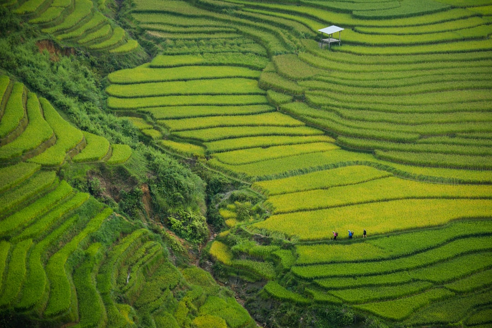

更多模組、更多產量、更多降低成本
MVF 模組化允許靈活的配置 - 容器甚至可以堆疊至 10 個容器高。 堆疊有兩個優點：

築城
FORTRESS
當佈置為牆壁系統時，農場可以受益於創建可以容納水耕柱森林來種植水果或蔬菜的庭院。 每根柱子可種植60株植物，株距60公分。 可以在這些庭院上加蓋屋頂以提供額外的保護。 庭院內的反光板為平面圖提供了更多的陽光。

梯田
TERRACE
當佈置在高處時，容器可以利用位能將水輸送到系統中，就像現實世界中的梯田農場一樣。 水透過流體動力學原理在吹風機系統的輔助下向上移動。
| MVF Aquacon™ | MVF Horticon™ | |
|---|---|---|
| 全名 | Aquaculture Container Module (水產養殖貨櫃模組) | Horticulture Container Module (園藝運輸貨櫃模組) |
| 描述 | Aquacon™ 是一種隔熱運輸容器，配有魚缸、過濾罐和設備，可維持受控環境以優化魚類生長。 | Horticon™ 是一個隔熱運輸容器，有五 (5) 層便攜式水耕槽在空間中移動，以便在容器的門端可以接觸到農作物。 |
| 功能 |
|
|
| 好處 |
|
|
| 影響 |
|
|
| 結構 |
|
|
| 維護 |
|
|
| 成本 | 根據尺寸和定製而變化 | 根據尺寸和定製而變化 |
| 可用性 | 可隨時購買 | 可隨時購買 |